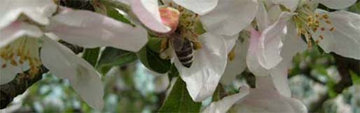
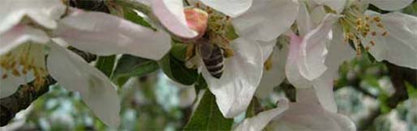

¿QUÉ ES UNA FLOR?
Se conoce con el nombre de flor a la parte reproductiva característica de las plantas de tipo espermatofitas o fanerógamas. Su función es la de generar semillas a traves de las cuales pueden surgir nuevas especies de plantas. La misma se forma usualmente al costado del tallo y está conformada por distintas partes como estambres, pétalos, pistilo, el receptáculo y los sépalos.

Las plantas espermatofitas tienen flores en donde se encontrarán semillas, pero la distribución interna de la flor es muy distinta en los dos grupos principales de espermatofitas: las angiospermas y las gimnospermas vivientes.

Las plantas espermatofitas tienen flores en donde se encontrarán semillas, pero la distribución interna de la flor es muy distinta en los dos grupos principales de espermatofitas: las angiospermas y las gimnospermas vivientes.
SABIAS QUÉ?
La flor más grande del mundo, la Titan Arum o flor cadáver, puede alcanzar aproximadamente 3 metros de altura. Esta gigantesca flor desprende un olor tan desagradable que se asemeja al de la carne en descomposición; la función de este aroma es atraer las moscas que se encargarán posteriormente de su polinización.